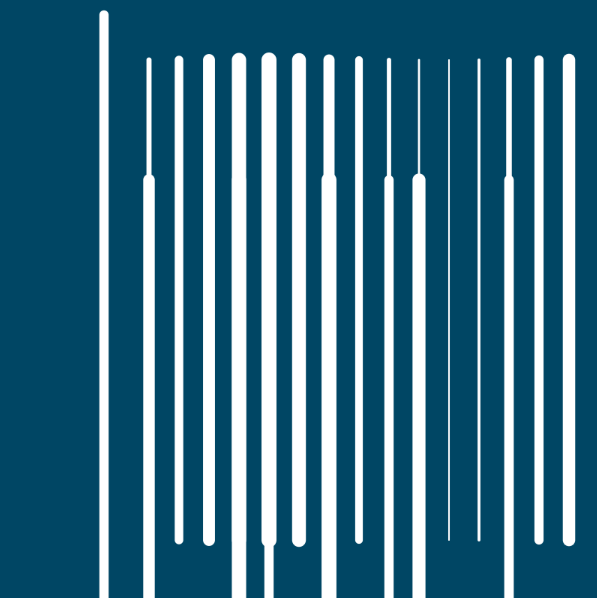
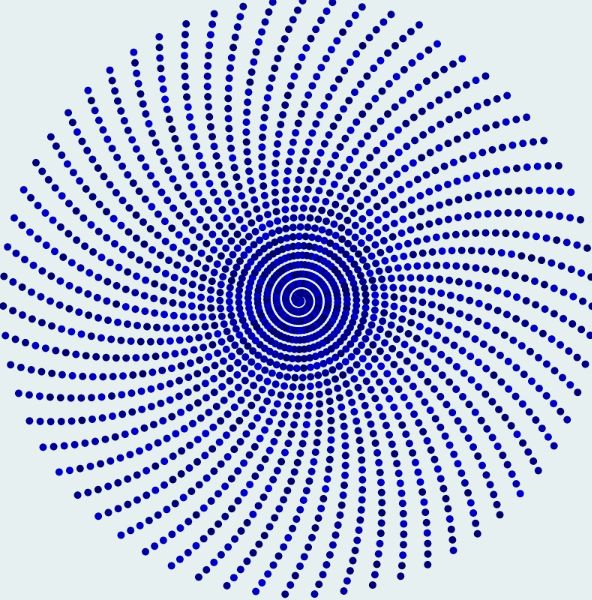
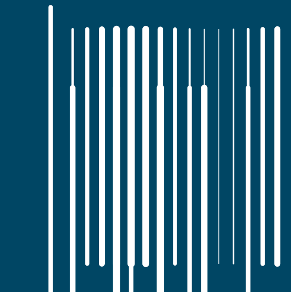
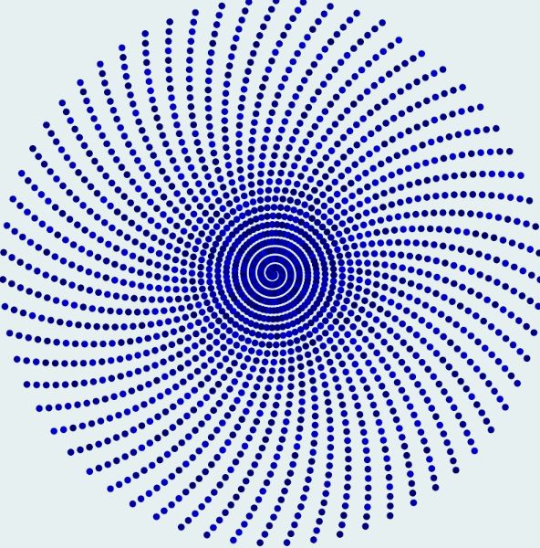
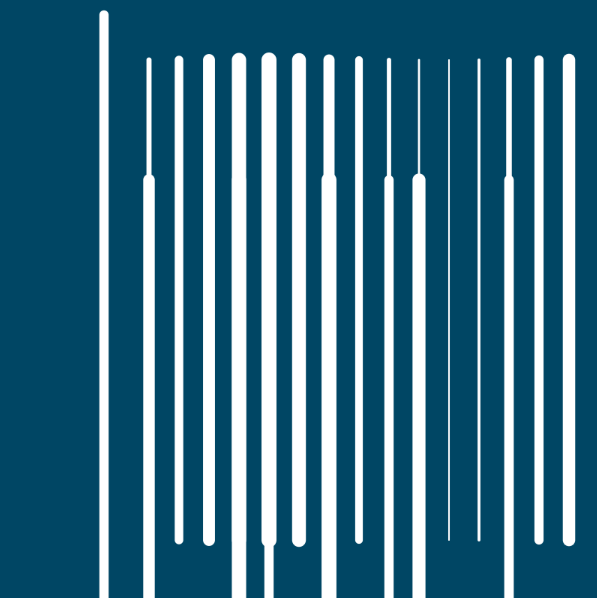
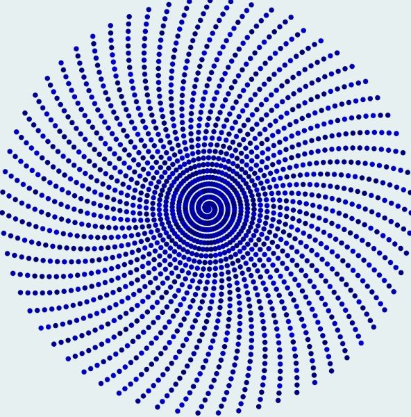

Ocean is a dreamcatcher that traps the dreams of sirens and drown voyagers
What is behind the weeds? Definitely not light, nor pure darkness
What do waves look like if they are not constantly changing? What will the last waves be like before the ocean disappears?
Vortex, Ortexv, Rtexvo, Texvor, Exvort, Xvorte
Into the Ocean

